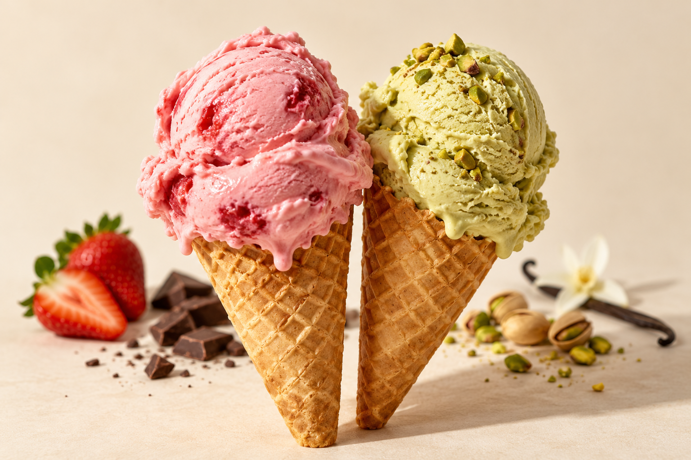

Frutilla
Un antojo con sabor a verano.
LE SUCRE · HELADOS
Una pausa, una charla, un antojo.
Siempre hay una buena excusa para un helado.

DOS HELADOS. MIL EXCUSAS PARA COMPARTIR.Las cosas lindas
se comparten.
NUESTRA HISTORIA
Hay sabores que se vuelven recuerdos. El cucurucho de la salida, el pote en la mesa, esa cucharada que siempre se comparte.
En Le Sucre queremos ser parte de esos pequeños momentos. Un lugar para hacer una pausa y darle algo dulce a tu día.
Conocé nuestro mundo en Instagram ↗EL MOMENTO MÁS DIFÍCIL: ELEGIR
Clásicos que abrazan.
Sabores que dan ganas de volver.
Una selección ilustrativa para tentarte. Consultá la carta y disponibilidad del día por Instagram.
Un antojo con sabor a verano.
Ese amor de toda la vida.
Una cucharada, otra sonrisa.
Para los que siempre vuelven a él.
TU PLAN MÁS RICO
Elegí la peli. Buscá las cucharitas.
El helado ya tiene su lugar en el plan.
ESTAMOS CERCA
Pasá a buscar tu momento dulce.
Seguinos para conocer las novedades de Le Sucre.
Las direcciones y los horarios de nuestros locales estarán disponibles próximamente.
Consultar por Instagram ↗